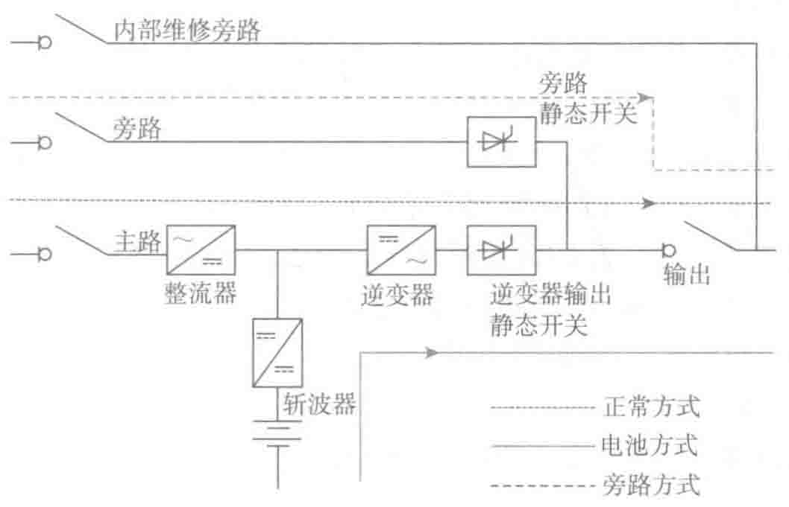

波动，并对电池充电。其输出频率取决于交流输入的频率。
- 电池后备方式：当市电输入电压超出UPS标称的允许范围或市电停电时，逆变器和电池投入，以确保继续给负载供电，输入开关（例如静态开关）同时断开交流输入，以防止逆变器的电倒送回上线电源。此时，蓄电池释放能量，UPS继续运行，直到电池后备时间结束或市电恢复正常；如果市电恢复正常，会将负载切换回主交流输入供电（正常方式）。
在线互动式运行UPS的优缺点如下：
- 优点：投资成本和运行成本都比同等功率的双转换在线式UPS低，因逆变器没有连续运行，正常运行时效率高。
- 缺点：没有真正将负载与上级的配电系统相隔离，因此，对市电电压的变化非常敏感，并经常需要用逆变器间歇性带载；负荷的非线性负载影响上级的电压波形；不能调节输出频率，只是简单地输出市电的频率；只对输出电压进行简单的调节，因为逆变器不是串联安装在交流输入线路中；随着负载率的减小，给电池充电的功率逐渐增大；由于缺少静态旁路而存在单点故障，即出现故障后，UPS停机，输出断电。
3）双转换在线式
以双转换在线方式运行的UPS如图3-3所示。

功能部件说明：
- 整流器：从电网获得电力并转换成直流电，为逆变器供电和给电池充电。
- 充电器：在高频UPS中，充电器一般由斩波器（DC/DC变换器）承担，或者单独设计充电电路，整流器不再承担充电调节的任务。
- 逆变器：完全再生一个高质量的输出正弦波电压，没有任何公共电网的干扰，尤其是没有任何间断；其允许范围与各种敏感性的电子设备兼容（例如，电压幅值的允许范围为±0.5%，频率的范围为±1%。与公共电力系统的±10%和±5%相比，